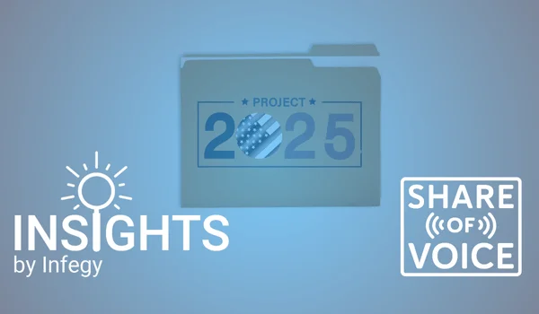
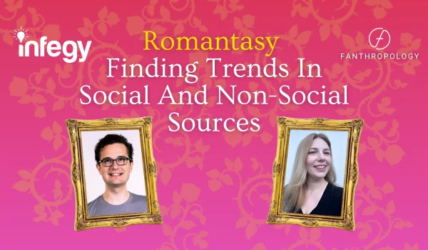
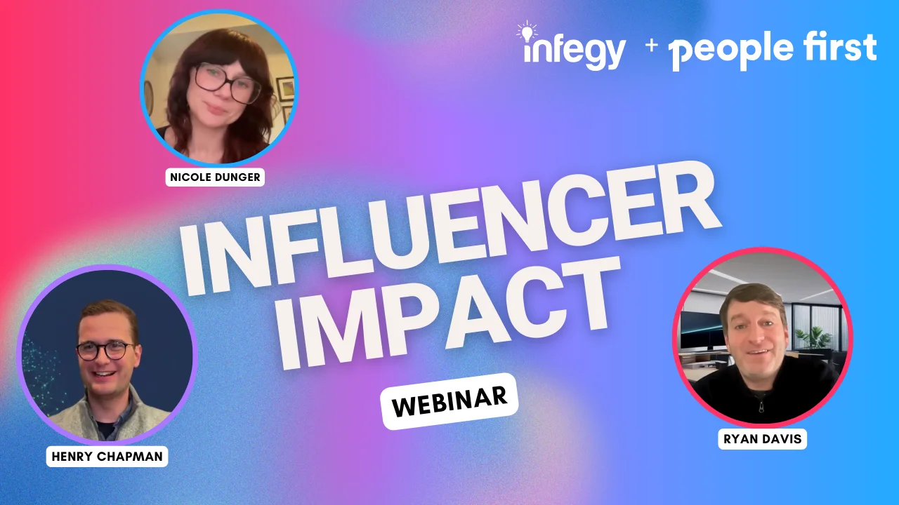
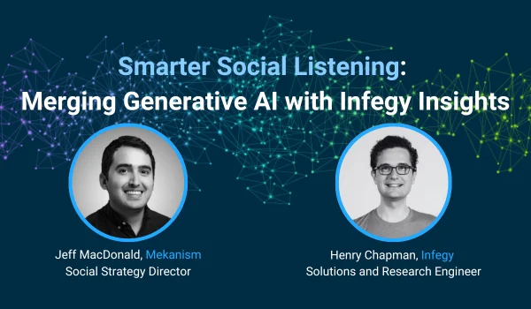
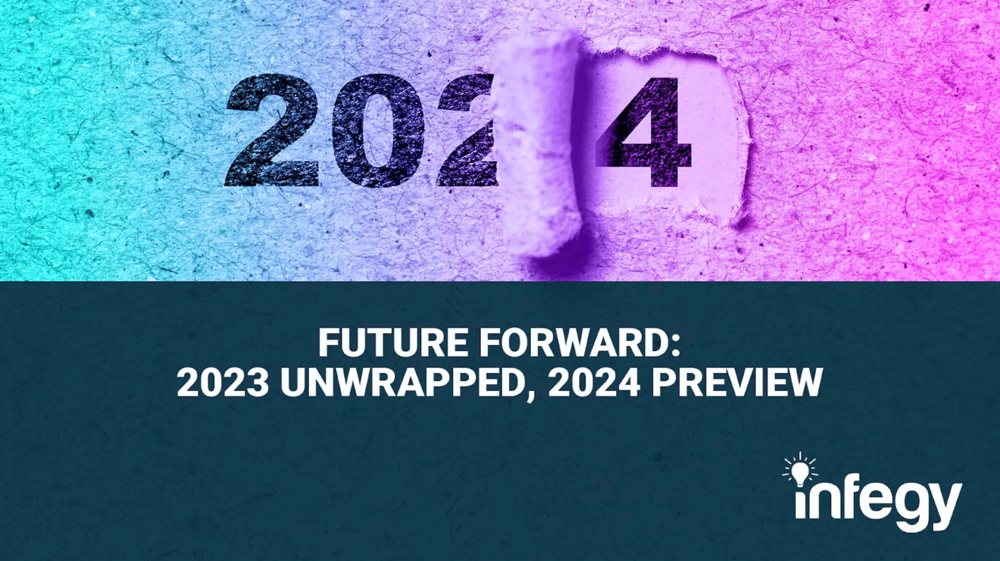
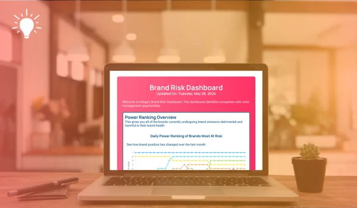
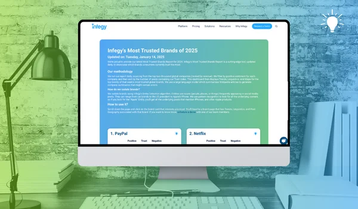
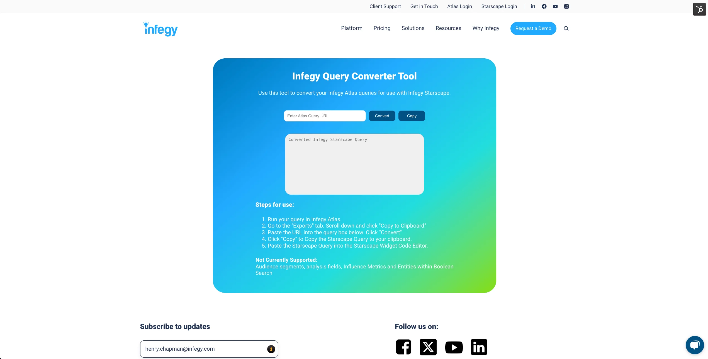

Social Intelligence
Research, analysis, and thought leadership in social media trends, data collection techniques, and industry insights.
Insight Briefs
During three years at Infegy I published over 100 insight briefs on brand, cultural, and political trends in social media. A sample of recent work is below.
Southwest Airlines Faces Backlash Over Checked Bag Policy
How social listening reveals brand risks in 2025 and the impact of policy changes on customer sentiment.
Read More →Analyzing 2025 Super Bowl Ad Performance
A deep dive into social media engagement and sentiment around Super Bowl commercials.
Read More →Romantasy's Rise: Finding Trends In Social And Non-Social Sources
Combining Infegy's Social Dataset and Custom Data Collection to showcase a genre's explosive growth.
Read More →Using YouTube Search For Custom Data Collection
Learn how to leverage YouTube's search API to gather custom data for your research and analysis needs.
Read More →Election Social Media Bias: X/Twitter vs. Threads & Bluesky
An analysis of how different social platforms covered the election season and their potential biases.
Read More →
Project 2025: Shifts in Political Discourse
Examining how political narratives evolved and shaped public discourse throughout the year.
Read More →Presentations
Webinars and speaking engagements

Cool Sh!t: The Infegy API's Limitless Possibilities
Discover how anyone (technical or not) can build powerful, scalable AI-driven apps using the Infegy API and no-code tools.
Watch Now →
Romantasy: Finding Trends In Social And Non-Social Sources
An exploration of how to discover new trends using social and Goodreads data, featuring insights from Kris Longfield of Fanthropology.
Watch Now →
Influencer Impact: How Audiences Drove The 2024 US Election
Analysis of how influencers and their audiences affected social conversation during the 2024 Presidential election.
Watch Now →
Smarter Social Listening: Merging Generative AI with Infegy Insights
Learn how to improve workflows with Infegy AI's new summary tool and other workflow improvements.
Watch Now →Pulse Check: Exploring Healthcare and Pharma through Social Vitals
Deep dive into insights surrounding the healthcare and pharmaceutical industries, including patient journeys and provider interactions.
Watch Now →
Future Forward: 2023 Unwrapped, 2024 Preview
Analysis of top trends in social media conversations for 2023 and predictions for 2024.
Watch Now →Infegy's Starscape API: Harnessing Speed + Flexibility in Social Listening
Walkthrough of the Starscape API's functionality and use cases for social media analytics.
Watch Now →Technical Projects
Tools and dashboards built with Infegy's APIs

Infegy's Fear + Cheer Index
Infegy's Fear + Cheer Index delivers real-time, AI-powered insights into economic sentiment by analyzing millions of social conversations to help you track public mood, market trends, and financial behavior before traditional data catches up.

Brands at Risk Dashboard
Using an ranking algorithm I wrote, this dashboard tracks which brands across the world are undergoing PR Crises. Built with Infegy Starscape's API, it automatically updates each day.

Most Trusted Brands Dashboard
Built Infegy's Most Trusted Brands (2022) dashboard using vanilla JavaScript and CSS, with a Python script to update the fields. Features 20 global brands ranked by their 2023 Infegy Trust score.
The Lumen - A Social Intelligence Barometer
Built using vanilla JavaScript and CSS, with recurring API queries in Python. Tracks top entities dominating conversation on TikTok, Reddit, and Instagram over different time periods.

Infegy Query Converter
Wrote a converter tool that translates JSON queries from Infegy Atlas into equivalent queries for Infegy Starscape.